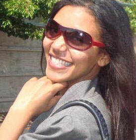

About Me
My name is Beth Gmariam; I was born and raised in Ethiopia. I am energetic, entusiastic to learn new things, specially technology. My passion toward Mathematics and Physics lead me to study Electrical Engineering. After I graduated from Elecrical Engineering. I moved to United States of America for a better life and opportunity. I started working at BestBuy Electronics store, as a sales representative while looking for a job in Engineering field. I studied the USA Electrical codes/standards and I was able find a job within one year; I worked for Engineering consulting firm in Oakland California. In 2013, while working in the company, I took Engineering licensing exam (EIT), I passed the exam with my first try. This was the longest hour exam I have ever taken :) (8hrs).
In 2015, I joined another Engineering firm in San Francisco. This new company utilizes 2D/3D modeling softwares (Revit, VisualStudio, ...etc). My responsibility, as Electrical Designer, was to design and model electrical system layout on those 2D/3D modeling computer softwares.
In 2017, I got married to my husband who lives in Canada, and I had to move from the state. During this time when I have time to accomplish my coding passion, I decided to attend the BootCamp Programe at University of Toronto (UofT). Currently, I am taking a fullstack web development program where we learn coding in different programming languages. In addition to my previous experience of utilizing various softwares, the following are the skills I have related to coding (HTML5, CSS, Terminal/GitBash commands, Git/Github, BootStrap, etc)